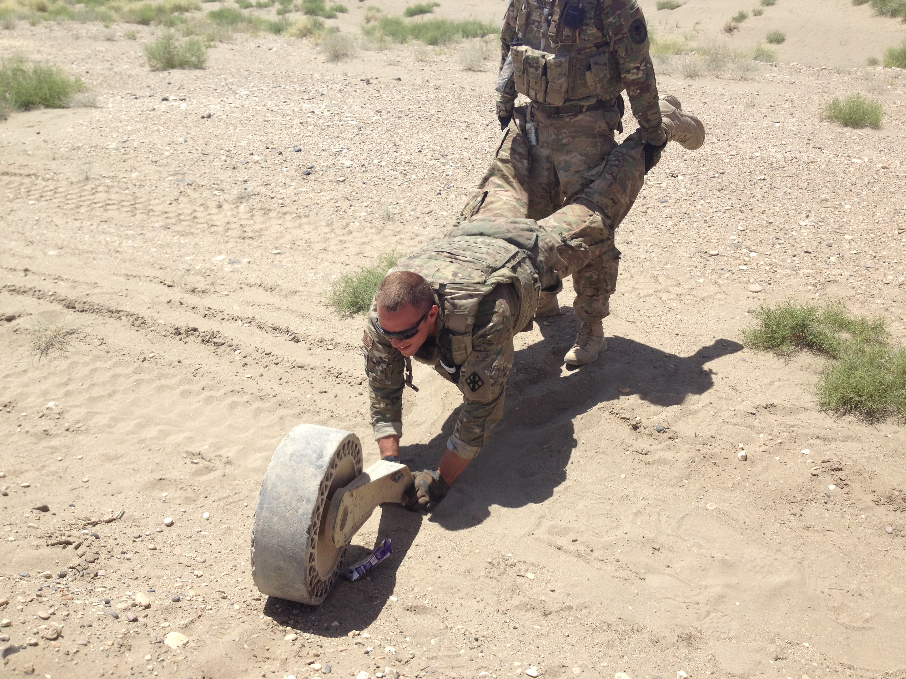
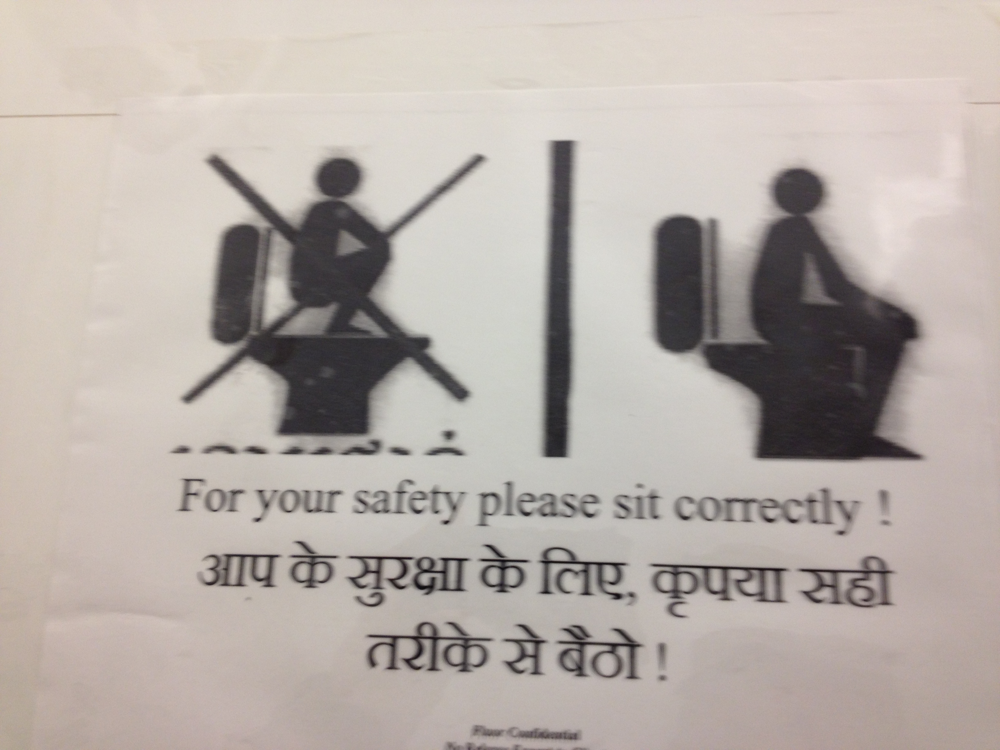

Which I'm not so fond of doing--you are far more interesting than I am (to me, at least). Pursuant to world peace and preventing forest fires the fine folks of the Galvanize instruction team have twisted my arm and I will channel my inner Narcissus for a bit. I hope that you enjoy the ramblings of someone who thinks he is far cleverer than he is, realizes it, and makes no positive changes in his life.
Yes, ladies and gentlemen, it's true, I'm a New Englander by birth--more wickedly specifically, a Downeaster. The sea is in my blood, I love clam chowder, had to train rigorously for years to get rid of my charming northeastern accent, actually enjoy Moxie, and got into regular fisticuffs with street gangs comprised of Matt Damon clones to hone my chops as a good Irish Catholic boy.
Disclaimer to real New Englanders: I'm from Maine in the sense that I was born on Loring AFB and spent about 4 months in the '80s up there, none of which I remember beyond a vague impression of the color blue, and, as I am told by reputable sources, taking a big 'ole swig of Formula 409--starting my incredible chain of surviving terrible decisions at a young age.
After a period of hopping around the country as a child woefully dependent on my father's career as a determining factor in my travels, I ended up for better or for worse in Johnstown, PA (a.k.a. the Valley of Misery) which is known for having devastating floods, high levels of poverty, and a vibrant community of the unemployed and daydrinking. Like any good (adopted) son of Johnstown, I got the hell out immediately following high school.
So naturally I did what I thought Hemingway or Kerouac would do and joined the Engineers! This sounds like a great career choice, right? I mean engineers are respected, earn good salaries, and generally have little trouble with home-maintenance projects. Wellll.... not combat engineers. You see, a combat engineer--sometimes referred to as a sapper--is a glorified infantryman that has traditionally done such glamorous things as dig ditches, clear minefields, attack the enemy with shovels and minesweepers, and all things BOOM! (emphasis mine, in all cases) related.
It turns out that you end up with a great deal of sort-of freetime in the army, which led to my enjoyment of my first great adventure into higher education! I learned a great deal about terribly boring things (I didn't think so, but I've learned after trying them as topics on several first dates) such as antifoundationalism, symbolic logic, Hegel's methods for making toast, Heidegger's refutations thereof, the incommensurability of scientific paradigms, and so forth. (Fair Disclosure: These represent the most complicated-sounding things I can remember both the names of and kind of how to explain.) Yay! All is great in the land of useless knowledge and playing army!
Then, of course, the United States Government finds a way to ruin everything: Route Clearance :D! I had the pleasure of spending my time in the 'Stan looking for the little presents that Tommy Taliban left us buried in the road, under culverts, and implanted inside of farm animals (no, really, that is a thing). It's kind of like a game of Stratego that lasts over a year and involves real consequences. Unpleasantness aside, here are some photos of your tax dollars at work:
|  |  | |
| SPC Brewer playing wheelbarrow. | US Government toilet-use technique doctrine. | They turned out to be "bad-guys". (Not the really (very) good looking one!) |
Following the war I got the hell out of the service for a variety of reasons spanning the personal, the political, and the OMFG!-I-do-not-want-to-sweep-sand-in-the-desert-anymore sort of thing. In an twist of irony that I'm sure you didn't see coming I ended up back in good 'ole Johnstown--you guessed it, unemployed and daydrinking (I'd like to assure my future employer that this was a post-war transitional phase that ran its natural course before I reverted back into an outstanding, upstanding, some-other-kind of standing American)! That just won't do for a life though, of course. So I did my own kind of On The Road thing for a time, meeting fascinating people in boring places all over until it was time to start figuring out an actual plan again.
I worked for a while in the oil & gas (read: fracking, and yes, it is pretty gross) industry--which is great money but absolutely terrible for things like one's health and the environment--as well as customer service and health insurance. This is all far less exciting even than it sounds, and I felt like that poor fellow Sisyphus, what with the maddening boulder and all of that. What to do, what to do.. Turns out my habit of compulsively reading the Google News aggragator several dozen times a day did something useful for me: this led to this and here we are with you and I preventing forest fires with narcissistic web-pages...